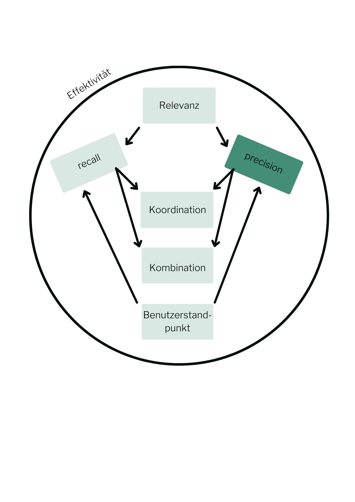

Standardmaß "Precision"
Die Genauigkeit eines Systems bei der Ermittlung relevanter Dokumente wird als precision bezeichnet (wieviele gefundene Dokumente sind relevant?). Precision steht für das Verhältnis der relevanten Dokumente, die das System ermittelt hat (a) zu allen Dokumenten, die das System ermittelt hat (a + b). Als Formel ausgedrückt bedeutet das:

Eselsbrücke: b steht für Ballast
Wichtig für die Precision
Oftmals ist precision für den Benutzer das wichtigere Maß, da es zumeist nicht auf die Vollständigkeit eines Ergebnisses ankommt, sondern darauf, dass man möglichst wenig Ballast geliefert bekommt (Ausnahme z. B. Patentrecherche, hier kommt es v. a. darauf an, dass kein Dokument übersehen wird).
Wertebereich: 0 bis 1; ein guter Wert ist 1, ein schlechter Wert ist 0.
Ist eine Ergebnismenge sehr groß, wird es im Normalfall schwierig (a) genau zu bestimmen, da nicht unbedingt alle Dokumente gesichtet werden können. Daher wird die Ergebnismenge häufig 'abgeschnitten' (cut off).
Um die Sortierleistung eines ranking-Systems zu beurteilen reicht precision alleine nicht aus; dazu benötigt man einen recall-precision-Graph, der recall und precision dokumentweise in Beziehung setzt.
recall und precision sind voneinander abhängig: je vollständiger das Ergebnis ist (besserer recall), desto mehr Ballast wird zwangsläufig geliefert (schlechtere precision).
